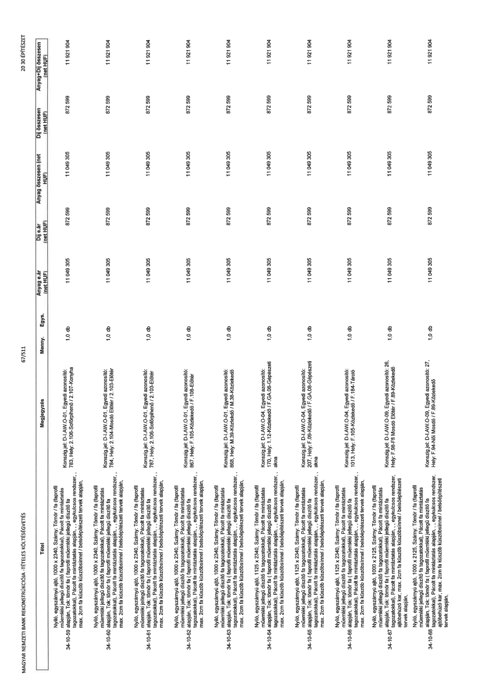

| Tétel | Megjegyzés | Menny. | Egys. | Anyag e.ár (net HUF) | Díj e.ár (net HUF) | Anyag összesen (net HUF) | Díj összesen (net HUF) | Anyag+Díj összesen (net HUF) |
|---|---|---|---|---|---|---|---|---|
| 34-10-59 alapján, Nyíló, egyszárnyú ajtó, 1000 x 2340, Szárny: Tömör / fa (faprofil műemléki jellegű díszítő fa tagozatokkal), Pácolt fa mintáztatás alapján, Tok: tömör fa (faprofil műemléki jellegű díszítő fa tagozatokkal), Pácolt fa mintáztatás alapján, , egykulcsos rendszer, , max. 2cm fa küszöb küszöbsínnel / belsőépítészeti tervek alapján, | Konszig.jel: D-I.AW-O-01; Egyedi azonosító: 783, Hely: 2.106-Söfőrpihenő / 2.107-Konyha | 1,0 | db | 11 049 305 | 872 599 | 11 049 305 | 872 599 | 11 921 904 |
| 34-10-60 alapján, Nyíló, egyszárnyú ajtó, 1000 x 2340, Szárny: Tömör / fa (faprofil műemléki jellegű díszítő fa tagozatokkal), Pácolt fa mintáztatás alapján, Tok: tömör fa (faprofil műemléki jellegű díszítő fa tagozatokkal), Pácolt fa mintáztatás alapján, , egykulcsos rendszer, , max. 2cm fa küszöb küszöbsínnel / belsőépítészeti tervek alapján, | Konszig.jel: D-I.AW-O-01; Egyedi azonosító: 784, Hely: 2.104-Mosdó Előtér / 2.103-Előtér | 1,0 | db | 11 049 305 | 872 599 | 11 049 305 | 872 599 | 11 921 904 |
| 34-10-61 alapján, Nyíló, egyszárnyú ajtó, 1000 x 2340, Szárny: Tömör / fa (faprofil műemléki jellegű díszítő fa tagozatokkal), Pácolt fa mintáztatás alapján, Tok: tömör fa (faprofil műemléki jellegű díszítő fa tagozatokkal), Pácolt fa mintáztatás alapján, , egykulcsos rendszer, , max. 2cm fa küszöb küszöbsínnel / belsőépítészeti tervek alapján, | Konszig.jel: D-I.AW-O-01; Egyedi azonosító: 787, Hely: 2.106-Söfőrpihenő / 2.103-Előtér | 1,0 | db | 11 049 305 | 872 599 | 11 049 305 | 872 599 | 11 921 904 |
| 34-10-62 alapján, Nyíló, egyszárnyú ajtó, 1000 x 2340, Szárny: Tömör / fa (faprofil műemléki jellegű díszítő fa tagozatokkal), Pácolt fa mintáztatás alapján, Tok: tömör fa (faprofil műemléki jellegű díszítő fa tagozatokkal), Pácolt fa mintáztatás alapján, , egykulcsos rendszer, , max. 2cm fa küszöb küszöbsínnel / belsőépítészeti tervek alapján, | Konszig.jel: D-I.AW-O-01; Egyedi azonosító: 867, Hely: F.105-Közlekedő / F.108-Előtér | 1,0 | db | 11 049 305 | 872 599 | 11 049 305 | 872 599 | 11 921 904 |
| 34-10-63 alapján, Nyíló, egyszárnyú ajtó, 1000 x 2340, Szárny: Tömör / fa (faprofil műemléki jellegű díszítő fa tagozatokkal), Pácolt fa mintáztatás alapján, Tok: tömör fa (faprofil műemléki jellegű díszítő fa tagozatokkal), Pácolt fa mintáztatás alapján, , egykulcsos rendszer, , max. 2cm fa küszöb küszöbsínnel / belsőépítészeti tervek alapján, | Konszig.jel: D-I.AW-O-01; Egyedi azonosító: 868, Hely: M.39-Közlekedő / M.38-Közlekedő | 1,0 | db | 11 049 305 | 872 599 | 11 049 305 | 872 599 | 11 921 904 |
| 34-10-64 alapján, Nyíló, egyszárnyú ajtó, 1125 x 2340, Szárny: Tömör / fa (faprofil műemléki jellegű díszítő fa tagozatokkal), Pácolt fa mintáztatás alapján, Tok: tömör fa (faprofil műemléki jellegű díszítő fa tagozatokkal), Pácolt fa mintáztatás alapján, , egykulcsos rendszer, , max. 2cm fa küszöb küszöbsínnel / belsőépítészeti tervek alapján, | Konszig.jel: D-I.AW-O-04; Egyedi azonosító: 170, Hely: 1.12-Közlekedő / F.GA.08-Gépészeti akna | 1,0 | db | 11 049 305 | 872 599 | 11 049 305 | 872 599 | 11 921 904 |
| 34-10-65 alapján, Nyíló, egyszárnyú ajtó, 1125 x 2340, Szárny: Tömör / fa (faprofil műemléki jellegű díszítő fa tagozatokkal), Pácolt fa mintáztatás alapján, Tok: tömör fa (faprofil műemléki jellegű díszítő fa tagozatokkal), Pácolt fa mintáztatás alapján, , egykulcsos rendszer, , max. 2cm fa küszöb küszöbsínnel / belsőépítészeti tervek alapján, | Konszig.jel: D-I.AW-O-04; Egyedi azonosító: 207, Hely: F.09-Közlekedő / F.GA.08-Gépészeti akna | 1,0 | db | 11 049 305 | 872 599 | 11 049 305 | 872 599 | 11 921 904 |
| 34-10-66 alapján, Nyíló, egyszárnyú ajtó, 1125 x 2340, Szárny: Tömör / fa (faprofil műemléki jellegű díszítő fa tagozatokkal), Pácolt fa mintáztatás alapján, Tok: tömör fa (faprofil műemléki jellegű díszítő fa tagozatokkal), Pácolt fa mintáztatás alapján, , egykulcsos rendszer, , max. 2cm fa küszöb küszöbsínnel / belsőépítészeti tervek alapján, | Konszig.jel: D-I.AW-O-04; Egyedi azonosító: 1013, Hely: F.105-Közlekedő / F.184-Tároló | 1,0 | db | 11 049 305 | 872 599 | 11 049 305 | 872 599 | 11 921 904 |
| 34-10-67 alapján, Nyíló, egyszárnyú ajtó, 1000 x 2125, Szárny: Tömör / fa (faprofil műemléki jellegű díszítő fa tagozatokkal), Pácolt fa mintáztatás alapján, Tok: tömör fa (faprofil műemléki jellegű díszítő fa tagozatokkal), Pácolt fa mintáztatás alapján, , egykulcsos rendszer, , max. 2cm fa küszöb küszöbsínnel / belsőépítészeti tervek alapján, | Konszig.jel: D-I.AW-O-09; Egyedi azonosító: 26, Hely: F.96-Fffi Mosdó Előtér / F.89-Közlekedő | 1,0 | db | 11 049 305 | 872 599 | 11 049 305 | 872 599 | 11 921 904 |
| 34-10-68 alapján, Nyíló, egyszárnyú ajtó, 1000 x 2125, Szárny: Tömör / fa (faprofil műemléki jellegű díszítő fa tagozatokkal), Pácolt fa mintáztatás alapján, Tok: tömör fa (faprofil műemléki jellegű díszítő fa tagozatokkal), Pácolt fa mintáztatás alapján, , egykulcsos rendszer, , max. 2cm fa küszöb küszöbsínnel / belsőépítészeti tervek alapján, | Konszig.jel: D-I.AW-O-09; Egyedi azonosító: 27, Hely: F.94-Női Mosdó / F.89-Közlekedő | 1,0 | db | 11 049 305 | 872 599 | 11 049 305 | 872 599 | 11 921 904 |
